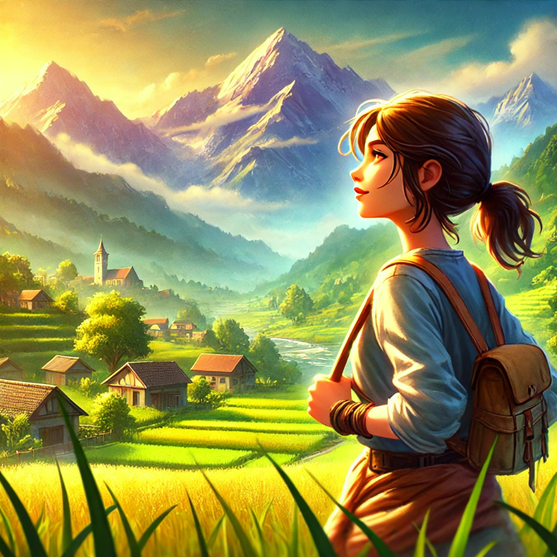
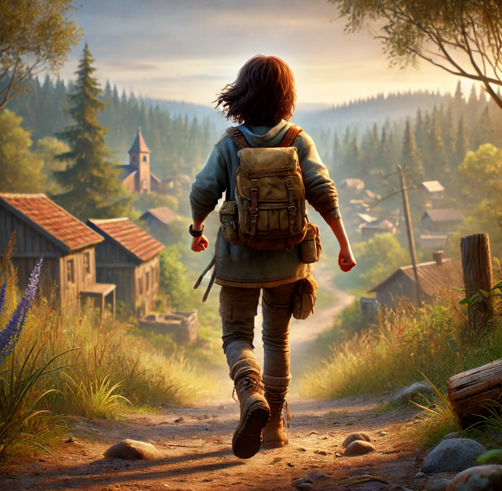
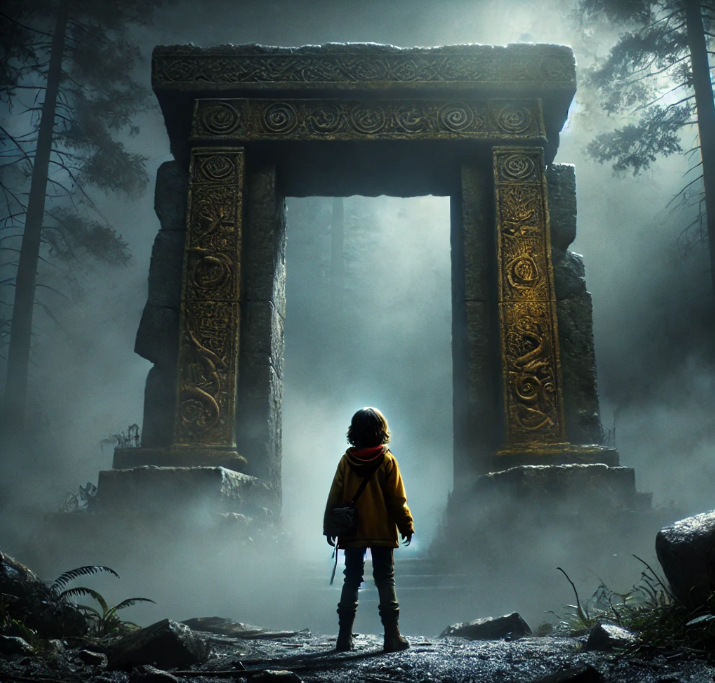

Genç kaşif Mira, küçük köyünde büyüyen hayalperest biriydi.
Efsanelerdeki kaybolmuş şehir, onun için bir tutku haline gelmişti.
Bu şehirde herkesin en derin arzuları gerçekleşiyordu, ama kimse bu şehri bulamamıştı.
Mira, kendi içindeki cesareti keşfederek yola çıkmaya karar verdi.
Haritasız, sadece kalbinin sesini dinleyerek ilerleyecekti.
Mira, efsanevi kaybolmuş şehri bulma arzusuyla köyünden ayrıldı.
Haritasız, yalnızca kalbinin rehberliğine güvenerek bilinmeyene doğru adım attı.
Bu yolculuk, onu hem dış dünyada hem de kendi içinde keşiflere götürecekti.
Mira, yolculuğunda fırtınalar, karanlık ormanlar ve derin vadilerle mücadele etti.
Her zorluk, onu daha güçlü ve cesur yaptı.
Bir gün, sislerin arasından eski bir taş kapı belirdi.
Kapının üzerindeki garip işaretler, onun kayıp şehre giden yol olduğuna işaret ediyor gibiydi.
Mira, kalbinin sesine güvenerek tereddütsüz içeri girdi.
Mira, kayıp şehre vardığında dileklerinin gerçekleştiğini gördü, ama kısa süre sonra bunun bir bedeli olduğunu fark etti.
Şehir, her hayal için ondan bir parça alıyordu—özgürlüğü ve ruhunu.
Mira, gerçek mutluluğun dışsal arzularla değil, kendi içindeki cesaretle bulunacağını anladı.
Şehri terk ederken artık biliyordu ki, en büyük hazine, bu yolculukta kazandığı bilgelik ve güçtü.